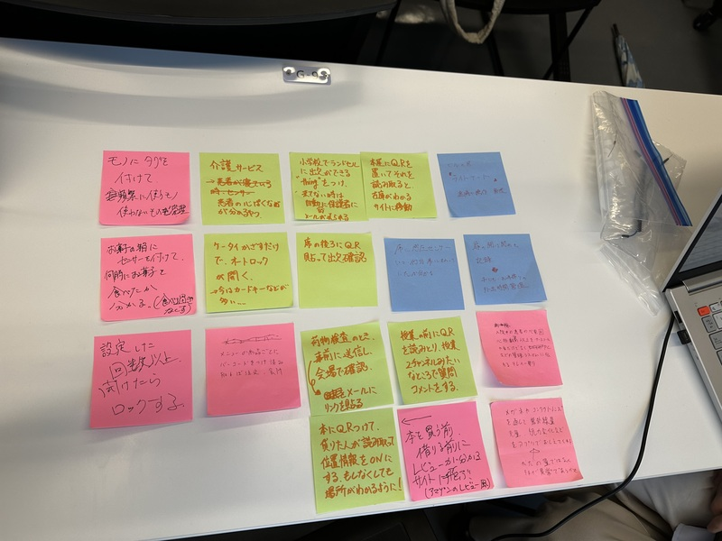
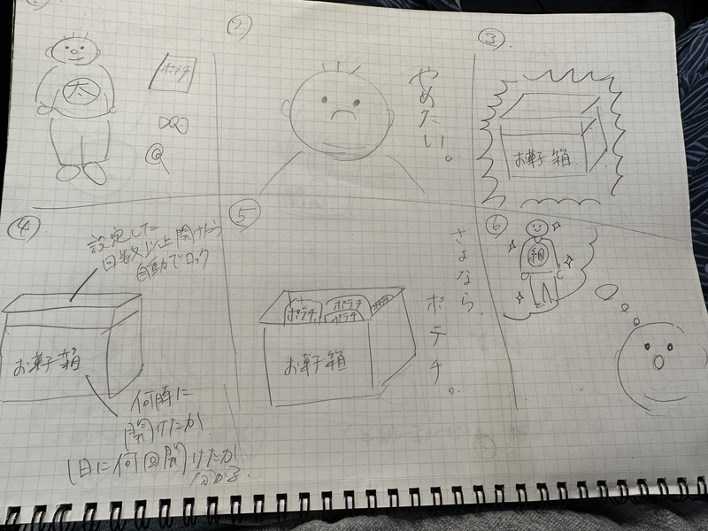

ー グループワーク ー
ー IoTで何ができそうか？グループワークした内容（ポストイット画像）ー
ー IoTで何ができそうか？自分で考えたアイディア（スケッチ） ー
お菓子の食べ過ぎを防ぐ箱。一日に設定した回数以上開けたら、自動でロックする。また、何時に箱を開けたのか記録し、自分がお菓子を食べた時刻を可視化する。
ダイエットを辞めたいという意思はあるが、どうしても継続出来ない人におすすめ。強制的にロックします。
お菓子の食べ過ぎを防ぐ箱。一日に設定した回数以上開けたら、自動でロックする。また、何時に箱を開けたのか記録し、自分がお菓子を食べた時刻を可視化する。
ダイエットを辞めたいという意思はあるが、どうしても継続出来ない人におすすめ。強制的にロックします。